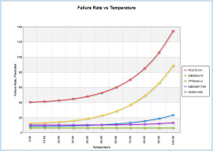

Question
 According to
some sources, MTBF is applicable only when failure times follow exponential
distributions. According to other sources, MTBF is applicable only for repairable systems.
You've probably also heard that MTBF is nothing more than MTTF. What do MTTF and MTBF really
mean? Are there differences between these terms?
According to
some sources, MTBF is applicable only when failure times follow exponential
distributions. According to other sources, MTBF is applicable only for repairable systems.
You've probably also heard that MTBF is nothing more than MTTF. What do MTTF and MTBF really
mean? Are there differences between these terms?
The Short Answer
MTBF (mean time between failures) is the expected time between two successive failures of a system. Therefore, MTBF is a key reliability metric for systems that can be repaired or restored. MTTF (mean time to failure) is the expected time to failure of a system. Non-repairable systems can fail only once. Therefore, for a non-repairable system, MTTF is equivalent to the mean of its failure time distribution. Repairable systems can fail several times. In general, it takes more time for the first failure to occur than it does for subsequent failures to occur. Therefore, MTTF for a repairable system can represent one of two things: (1) the mean time to first failure (MTTFF) or (2) the mean uptime (MUT) within a failure-repair cycle in a long run.
The Details
While MTBF is one of the most widely used metrics in reliability engineering, it is also one that causes a great deal of confusion. By going through the theoretical definitions and alternative uses for MTBF, the reasons for this confusion become apparent.
Repairable Systems
In most reliability engineering literature, and particularly in theoretical literature such as research papers, MTBF represents the mean time between failures. It is applicable when several system failures are expected. This is possible only when the system is restored after a failure. The restoration can be performed by repair or replacement of some of its failed components. Such systems are known as maintainable systems or repairable systems.
After restoration, the system may not be as good as new. This is because the repair of the failed components may be imperfect, warm components may still be present in the system, or all failed components may not have been restored. Once a restored system is returned to operation, it can fail again after some time. The failure of the system leads to downtime. Therefore, between two consecutive failures, the time can be divided into uptime and downtime. The time between failures is referred to as a failure-repair cycle time. In most cases, this time stochastically decreases with the age of the system. This means that although there are some random variations in time, on average, there is a decreasing trend. Therefore, strictly speaking, the MTBF of the system is a function of system age.
If all system failures can be restored, then in a long run, the estimate of the cycle time becomes constant with respect to the system age. This is known as the steady-state condition . Theoretically, this condition exists as time tends to infinity. However, for reliable systems where downtime is small in comparison to uptime, the steady-state condition can be realized in a short time. Therefore, in practice, the MTBF is calculated by assuming that the system has reached the steady-state condition. Because the MTBF is the expected value of the failure-repair cycle time, it is sometimes referred to as the mean cycle time (MCT).
The values for uptimes and downtimes can also change with system age and reach their asymptotic values. The expected values of the uptime and downtime in the steady-state condition are known as the mean uptime (MUT) and mean downtime (MDT). Because the uptime is equivalent to the failure time, it is also known as the mean time to failure (MTTF). The downtime can consist of repair time and other delays. If there are no delays, then downtime is equivalent to the repair time. In this case, the mean downtime (MDT) is equivalent to the mean time to repair (MTTR). MTTR is also known as mean corrective time. Under the steady-state condition, the following well-known relationships exist:
MCT = MUT + MDT
When there are no delays in repair:
MTBF = MTTF + MTTR
Availability = MTTF/MTBF = MTTF/(MTTF + MTTR)
As discussed earlier, MTTF is a function of system age. The expected time to the first system failure is called the mean time to first failure (MTTFF). MTTFF is important for systems where online repairs are tolerable but not offline repairs. The use of MTTF for both MTTFF and steady-state MUT is another source of confusion. It should be noted that for a single-component system, with perfect repair, MTTFF is equivalent to MUT. Therefore, regardless of what MTTF refers to, its value is the same for single-component systems. In the majority of systems, MDT or MTTR is negligible. In such cases, MTBF ≈ MTTF. Therefore, in most practical cases, MTTF is approximately equal to MTBF. This is obviously another source of confusion.
Non-Repairable Systems
 Some systems, such as spacecrafts, cannot be repaired after a major failure. In other cases, even though maintenance tasks can be performed offline, they cannot be performed during a mission. For all of these types of non-repairable systems, the time to system failure is an important reliability characteristic. The expected value is known as mean time to failure (MTTF). Because a non-repairable system can fail only once, both MTTFF and MTTF refer to the same metric. Because the time to failure is equivalent to the time before failure, some sources define MTBF as the mean time before failure, which actually means the MTTF. Using MTBF to represent the mean time before failure is one of the major sources for confusion on this topic.
Exponential Distribution
The exponential distribution plays an important role in reliability engineering. For the majority of systems, and particularly for electrical and digital systems, the failure distribution is exponential during its useful life. According to Drenick's theorem, even if individual components fail according to other distributions, in a long run, the successive times of a repairable series system follows the exponential distribution. In addition, using some simple transformations, a distribution such as Weibull can be expressed as an exponential distribution. Furthermore, according to the method of stages, any distribution can be expressed as a combination of exponential distributions.
One of the parameters of the exponential distribution is the threshold value, which is used to indicate a time when failures are guaranteed not to occur. In many practical applications, the threshold parameter is assumed to be zero. In such cases, the exponential distribution has only one parameter, the rate parameter (λ). If the exponential distribution is used to model the time to failure, this parameter is known as the failure rate or hazard rate. The reciprocal of the rate parameter is equivalent to its distribution mean. Therefore, MTTF = 1/λ. This means that the distribution can be completely defined in terms of MTTF or λ.
The majority of reliability (failure rate) prediction standards assume that the underlying distribution is exponential. In most standards, MTBF is used to represent the mean time before failure. Even if a standard defines MTBF as the mean time between failures, it inherently means MTTF because MTTR is almost negligible. Therefore, according to this terminology, MTBF is equivalent to the mean of the failure time distribution. This implies that MTBF = 1/λ.
Conclusion
As demonstrated in this article, there are many sources of confusion surrounding the use of reliability metrics, especially in regards to MTBF. By clarifying the underlying data and measurements, reliability metrics can be understood and used by reliability engineers to make meaningful statements about product reliability. Because reliability metrics are such important elements in reliability engineering, proper understanding and usage are critical. General information about many different reliability metrics can be found in Reliability 101.